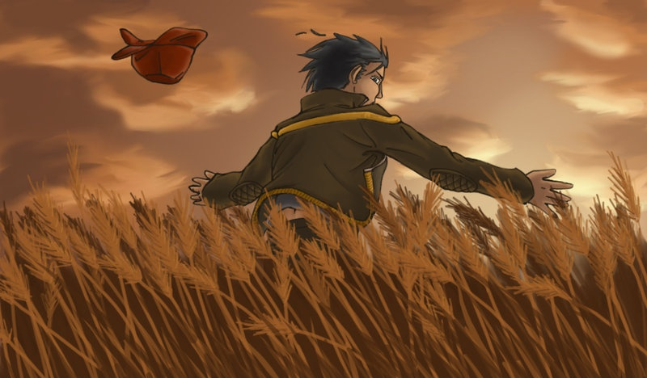
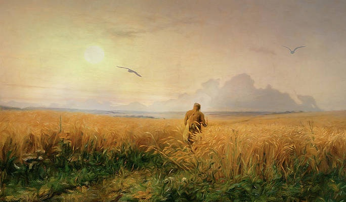

Holden Caulfield
Holden Caulfield is the protagonist in “The Catcher in the Rye”. Holden Caulfield is a 16 year old kid who is soon to be expelled from an all boys school called “Pencey Prep”. Holden is intelligent but does not do work in school. Holden thinks all adults in the world are hypocrites, fake and liars. He calls these types of people “phonies” and dislikes them in general. Holden is no different from a Phony however. Holden lies and is a hypocrite throughout the story and it is something he battles in the story as he does not want to be a phony. Holden and his hate for phonies eventually breaks him emotionally.
Phoebe Caulfield
Phoebe Caulfied is Holden’s younger sister. Phoebe is 10 years old, but despite the age gap between Holden and Phoebe, Holden understands Holden much more than others do. Phoebe is quite intelligent and a dancer. Phoebe is Holden’s only source of happiness in the novel as she is someone he can talk to. Phoebe can be mature and understands Holden very well.
Stradlater
Stradlater is Holden’s roommate in “The Catcher in the Rye”. Stradlater is considered as a handsome and popular kid in Pencey Prep and he admires himself a lot. Holden refers to Stradlater as a “secret slob” as he appears clean to others, but his items such as his razor are disgusting. Stradlater goes on a date with a girl Holden really likes in the story named Jane Gallagher.
Mr.Antolini
Mr.Antolini is Holden’s old english teacher at Elkton Hills High School.Mr.Antolini is a intelligent individual who is respected by holden. Mr. Antolini is also a heavy drinker.
Ackley
Ackley is Holden’s neighbour in Pencey Prep. Ackley is unhygienic and very insecure. Ackley barges into Holden’s room at many points without asking and Ackley does not have a good relationship with Stradlater.
D.B Caulfield
D.B is Holden’s older brother who now works on writing hollywood movies. Holden thinks D.B is very talented but wasted his talent on going to hollywood.
Mr.Spencer
Mr.Spencer is Holden’s old history teacher in Pencey Prep. Mr.Spencer tries to talk Holden out of his academic failures in the novel but fails.
Other Articles and Extras.
Find our other articles and extras listed in an organized format down below.

The Phoniness of Adults.
Read a short article regarding Holden Caulfields and his constant thought of all adults being a phonie. This is a major theme in the book, and this article goes more in depth about what Holden means about "phoniness".
Read Article

Personality Quiz
Take this short 5 question personality quiz to find out which character from "The Catcher in the Rye" describes you the best.
Take Quiz